Favorites plans, sometimes known as calling circle plans, allow you to give your customers preferred calling rates to a limited amount of numbers.
In this example scenario, you want to create a plan with the following characteristics:
The specifics of the plan you create, of course, will likely be different.
The general steps to creating a favorites plan that includes a notification:
This tutorial topic will show you the settings for each step that you have to enter that will result in a working favorites plan that your customers can buy.
A service policy for favorites contains a behavior policy in its filter. So before you can create the feature that contains the service policy for this plan, you have to create the behavior policy. Start by going to the Behavior Policies page.
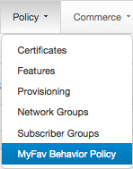
Click New to see the Add Behavior Policy dialog box.
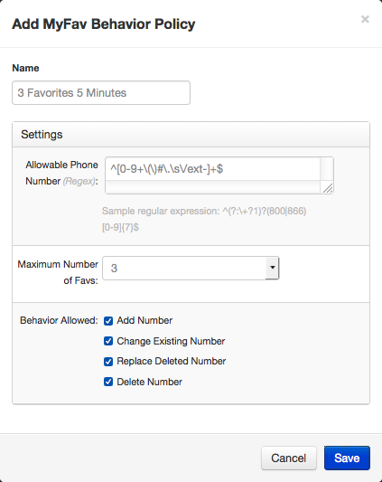
To start with, we give it a name that will make it easy to find: 3 Favorites 5 Minutes.
You can read more details about behavior policy settings.
Probably the most difficult thing to do is to fill in the Allowable Phone Number field. What you enter in this field is a regular expression, sometimes known as a RegEx.
A regular expression is a construct common in programming that matches patterns. For our purposes here, we want to keep this as simple as possible. So we will enter a regular expression that matches any phone number: ^[0-9+\(\)#\.\s\/ext-]+$
This regular expression does the job in a very basic form. It doesn't specify how many digits a phone number should have or what numbers are valid for any of the digits. It only verifies that what gets entered in a favorites field contains only the following: digits, parentheses, dashes, plus sign, space, pound sign, asterisk, period, comma, and the letters e, x, and t. It is beyond this topic to explain how this works, but there are many, many resources to not only explain regular expressions, but to provide regular expression recipes for many, many purposes.
In the Maximum Number of Faves drop-down list, select 3, because that's how many favorites we want our customers to have.
For Behavior Allowed, select all the check boxes. You don't want to restrict the actions your customers can take.
Click Save and you're done with this part.
As with creating a basic plan, you first need to create a purchasable feature with a voice service policy. It's the service policy in the feature that gets used by the plan.
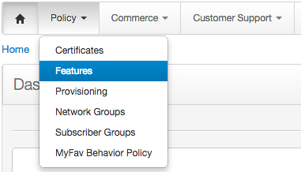 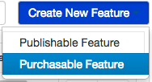 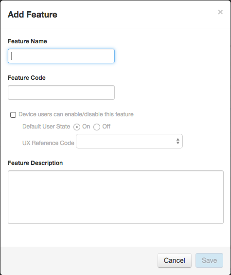
To make sure we can find the feature, we'll give it a descriptive name: 3 Favorites 5 Minutes.
When you offer a plan such as this, it's very likely that your customers will also have one or more other voice plans. You want to make sure that when appropriate, that is, when a customer uses a preferred destination, that the plan that uses the service policy in this feature is used instead of a different plan.
After you click Save in the Add Feature dialog box, make sure you set a priority for the feature that's higher than the priority of other features that have voice service policies. See Feature Settings for more details about feature priorities.
Like with the basic plan, we'll add a voice policy, in that voice policy, we'll add a component, and in that component, we'll add a filter. All of these will have the same name as the feature.
This time, we're going to add a filter criteria.
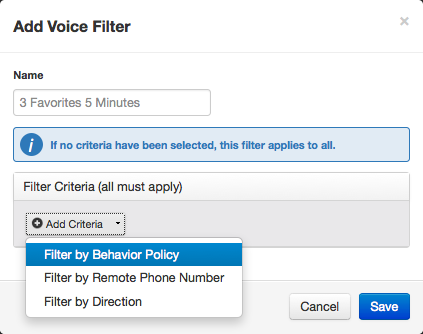
Once you add the filter, then you add the behavior policy.
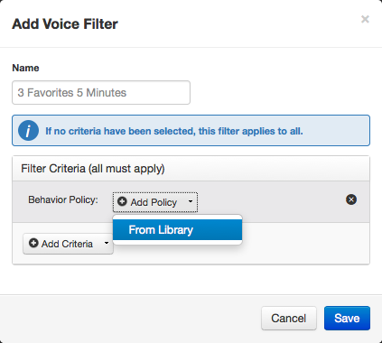
Because there is only one behavior policy, it is added automatically.
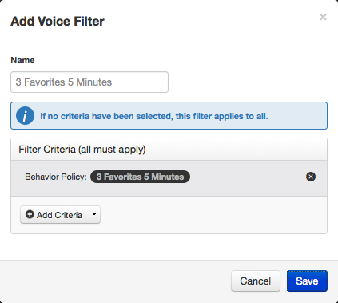
Click Save.
As with the basic plan, we add a policy event. At this point, we're done with the feature, so we test and publish it.
We start by creating a new plan. The initial steps are the same as in Create a Basic Plan. We give the plan a name: 3 Favorites 5 Minutes.
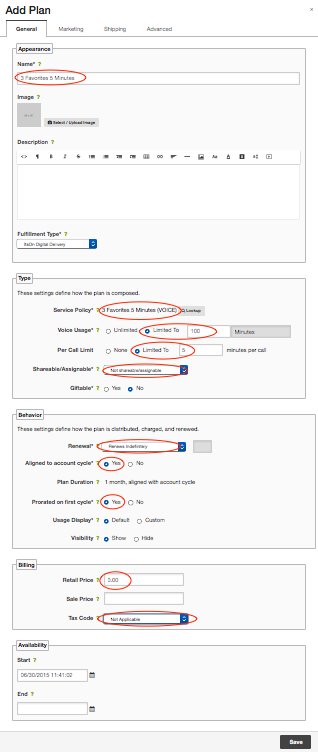
The Per Call Limit setting is the key here. This means that when customers make a call, the call length is limited by the amount of minutes you define here.
When the call limit or plan usage limit is reached, several things can happen:
In addition to a per-call limit, when you create a plan using a behavior policy, you also define a total usage limit (see above) for favorites use. For example, the behavior policy settings allow you to define the total number of favorites slots. With this setting, you decide that each slot allows 5 minutes per call. If you define a behavior policy with 3 slots and put it in a plan and define 100 minutes of usage, a customer who receives the plan can make as many favorites calls as they want up to a total of 100 minutes. This total usage limit helps curtail abuse.
You have to at least promote a plan (although you do not have to approve it) before you can use it in a notification. So go to the Site Updates > My Changes page and promote the 3 Favorites 5 Minutes plan.
Notifications have 2 parts: bodies and shells.
We start by going to the Notification Bodies page to create a notification body.
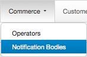
There are several types of notifications. We want to use a Usage notification, so click on Usage.
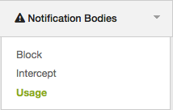
Click Add Usage Notification Body. As we've been doing, we'll give it the name 3 Favorites 5 Minutes.
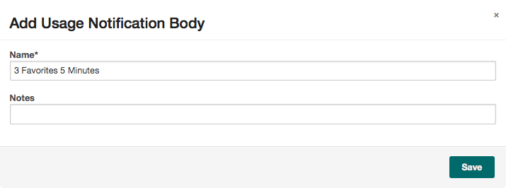
Click Save.
Usage notifications have 3 sections:
For this plan, we want to add one rule and one threshold in the Criteria section. The rule is to match the plan, and the threshold defines when the notification trigger happens.
Rule setting: Click +Rule, Select Product - Name, is equal to, and then click Lookup to select the 3 Favorites 5 Minutes plan.
Threshold setting: Click +Add, select Units Remaining, enter 1, and select Voice Minutes. For Applies to, select Per call allowance.
The result of these values is that when a customer is making a call using this plan, the notification will trigger when there is 1 minute left in the call.
Notification content can contain text and sound. Text content appears on a customer's device screen. Sound content is played through a customer's device audio output.
For this plan, we want customers to get the notification while they are making a call to let them know that their time is running out. Therefore, textual content isn't useful. But we do want to add audio content.
Click No for Add text? and Yes for Add audio?, then see Add Audio Translations to a Notification for instructions.
Also, click Yes for Play when user is on a call? because that's exactly what you want to happen.
This is the final setting we want to get the desired notification behavior, so we just save and finalize the notification body.
See Add a Notification.
We want to add a usage notification and give it the following settings:
Once you save the notification, you have to take it through the same promote, approve, and deploy process as any other change, except after you promote it, you should test it (which is done using sandboxes) before you approve and deploy it.
When the notification is deployed, it gets pushed to ItsOn Smart Services-powered devices.